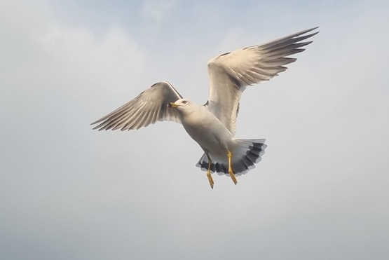
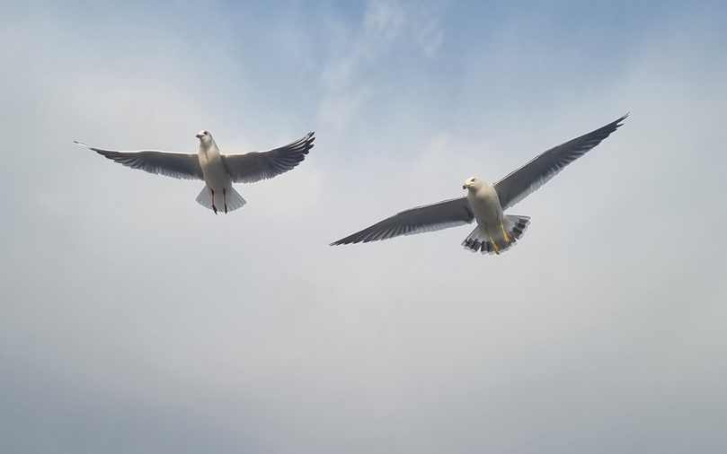
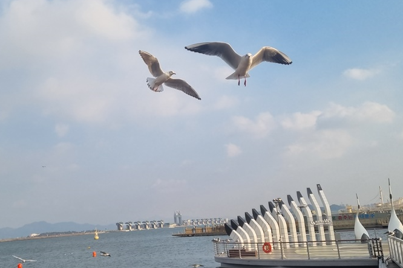
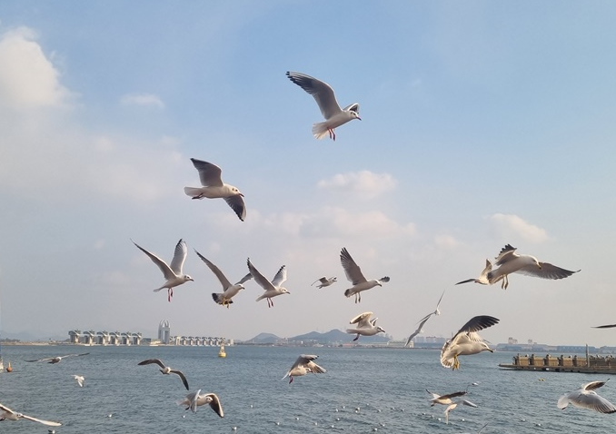
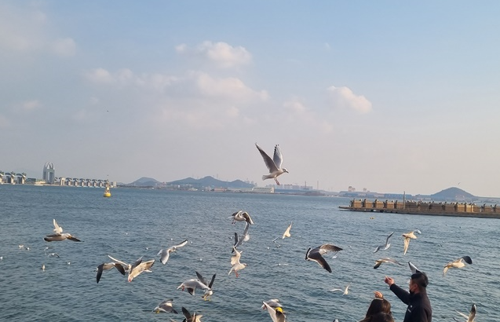
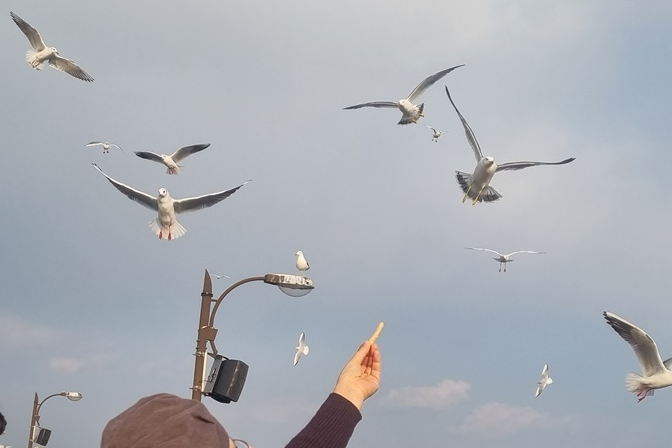
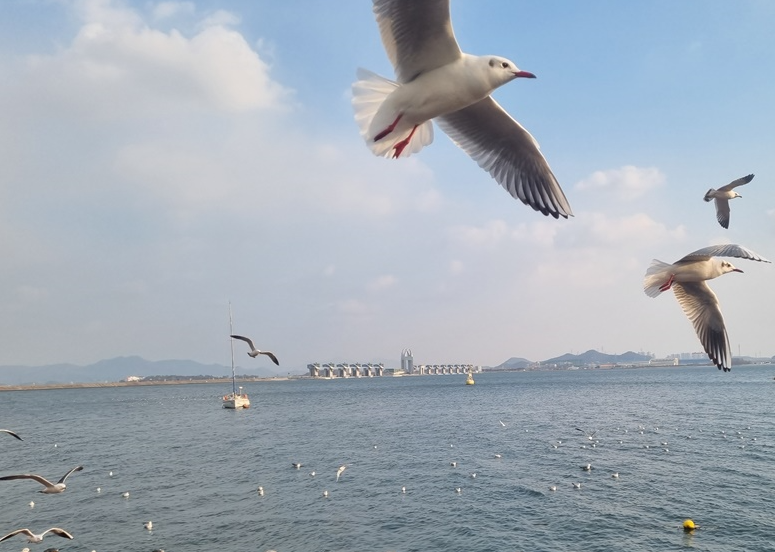

외동아는 이기심과 외로움의 양면성이 내재되어 있다. 형제들끼리 부대끼며 인간관계를 맺을 기회를 많이 가진 형제아보다 사회성을 키울 기회가 부족할 수 있다. 형제가 없기 때문에 자신의 위치가 박탈당하거나 쫓기는 경험이 없다. 이 때 부모는 아이가 잘못되지는 않을까 라는 걱정 때문에 과잉보호·과잉통제를 하면서 아이는 스스로 일을 처리하지 못하고 매사 주변의 눈치를 살피는 의존적이고 허역함, 이기심이나 '내 것이야'을 강조하는 자기중심적인 부정적인 측면도 있지만 리더쉽을 발휘하고 자기 요구에 대한 명확한 의사표현을 통해 긍정적인 측면을 가질 수 있다.

외동아의 장점과 단점
외동아는 엄마 아빠와 늘 밀접한 관계 속에 있어 의존적 부모의 애정이 집중되며 관심을 많이 받고 자라 성격이 밝고, 부모와 일 대 일로 지적 자극을 받을 기회가 많아 행복도가 높고 지적 호기심과 자아존중감이 높은 편이다. 물질적, 정신적 배려와 기대를 받기 때문에 성공할 가능성이 높다. 반면 부모의 지나친 애정과 과잉보호가 아이의 능동성을 저해하여 스스로 학습할 기회를 잃을 수 있다. 이로인해 의존성이 발달하여적이 되고 인내심 부족, 이기심이 형성될 수 있다.
외동아는 형제가 있는 가정에 비해 부모와 상대적으로 더 많은 시간을 보내며 더욱 친밀한 관계를 맺는다. 이로인해 자기 주장이 분명하고 성취도 면에서도 뛰어난 능력을 발휘하여 높은 언어발달과 조숙한 행동을 보일 수 있다. 반면 부모의 양육 태도나 가정환경에 의하여 또래와의 관계에 대한 경험이 부족해 진다. 또한 또래와 타협하고 양보하는 법을 익히지 못해 사회성이 부족할 수 있다. 부모의 양육기준으로 여러 가지 상황을 적절하게 다루면 아이는 자신감을 배우게 될 것이다.
외동아의 사회성과 자아존중감 길러주는 방법
1) 자기 스스로 생각할 기회
부모가 아이에게 항상 지켜보고 집중하지 않도록 주의하되, 아이가 혼자 무엇을 하든 관심을 주지 말고 내버려두어 심심하다고 느낄 때 혼자 놀이하거나 호기심을 증가시켜 주는 방법이다. 즉, 애완동물이나 화초, 나무 등 자신이 가꾸고 돌보아줄 수 있는 대상과 교감하고 아울러 책임감을 갖도록 노력하는 자율성에 대해 의미를 부여해주는 것이 좋다.

2) 상호작용으로 대화하는 방법
부모가 친구처럼 놀아준다거나, 자연스럽게 또래와 어울릴 기회를 만들어주거나 하는 식으로 여건에 맞는 대안을 마련하면 사회성을 길러 줄 수 있다. 부모가 다른 사람과 이야기하는 법, 장난감 등을 나눠서 가지고 노는 법 등 상호 작용 기술을 가르쳐주기, 상대방의 역할을 맡아 상황에 따라 서로 다른 입장을 이해하도록 해야 한다.

3) 칭찬과 격려로 만족감 증가
아이에게 다양한 경험을 혼자 하도록 하고 그 과정에서 실수를 하더라도 일어나는 일들을 생각해 볼 수 있는 기회를 제공한다. 혼자 일을 해냈을 때 칭찬과 격려를 해주면 아이는 많은 자극을 받아 지적 호기심이 뛰어나게 된다. 더불어 창조적인 성향이 강해질 경우, 자신이 쓸모 있는 긍정적인 성향이 되면서 만족감이 증가된다.

4) 욕구조절과 문제 해결 능력
외동아는 자신이 원하는 것을 바로바로 얻는 경우가 많다. 평소에 아주 사소한 것이라도 ‘엄마 것, 아빠 것’ 하는 식으로 구분을 철저하게 해야 '내것이야!' 라고 강하게 고집하는 사고를 감소시킬 수 있다. 또래와 물건을 나눌 때, 왜 나누어 써야 하는지, 친구와 놀 수 있는 물건을 빼앗은 경우의 감정을 인식하도록 주의한다. 부모가 아이에게 필요한 것을 알아서 챙겨줄수록 아이가 빨리 잘될 것 같지만 오히려 아이는 자기주도성을 잃어 갈 수 있다. 그러므로 아이 스스로 인내할 수 있는 욕구조절력을 차분하게 도와야 한다.

5) 호기심과 자아탄력성
외동아는 또래들과 어울리는 경험은 즐거움과 호기심을 유발하지만 속상하고 화가나는 등 부정적 감정도 다양하게 있다. 이러한 부정적인 경험은 회피하지 않도록 하면서 부모의 양육과 훈육 과정을 통해 아이가 또 다른 경험에서 회피하지 않고 자신감과 즐거움을 내면화시켜 가도록 한다. 외동아는 스스로 노력하는 것에 대해 자아탄력성의 의미를 부여해 주는 것이 알맞다.

6) 타인의 감정과 생각 이해
언어발달은 개인에 따라 속도의 차이가 있지만 선천적이고 자연적으로 비슷한 발달과정과 순서로 성장한다. 외동아의 경우 주로 부모와 이야기를 많이 하기 때문에 사용하는 어휘량은 적고, 조숙한 언어를 사용하게 된다. 그래서 또래들과 대화할 때 자신의 생각과 말과 행동이 박탈되어 좌절감을 경험하게 된다. 외동아의 의사소통으로 문제 해결하는 과정을 통해 타인의 감정과 생각을 이해할 수 있는 기회를 자주 마련해 줄수록 좋을 것이다.

2022.06.09 - [분류 전체보기] - 껌딱지처럼 의존하는 아이 - 다양한 시행착오로 자신감 갖도록
껌딱지처럼 의존하는 아이 - 다양한 시행착오로 자신감 갖도록
의존성 의의 및 행동 특성 아이는 12개월이 지나면 자아상이 생기고 스스로 하고 싶은 것들이 증가한다. 이 시기에 만들어진 자신감과 긍정적인 자아상에 의해 자립심이 형성된다. 아이들은 발
think-sis.co.kr